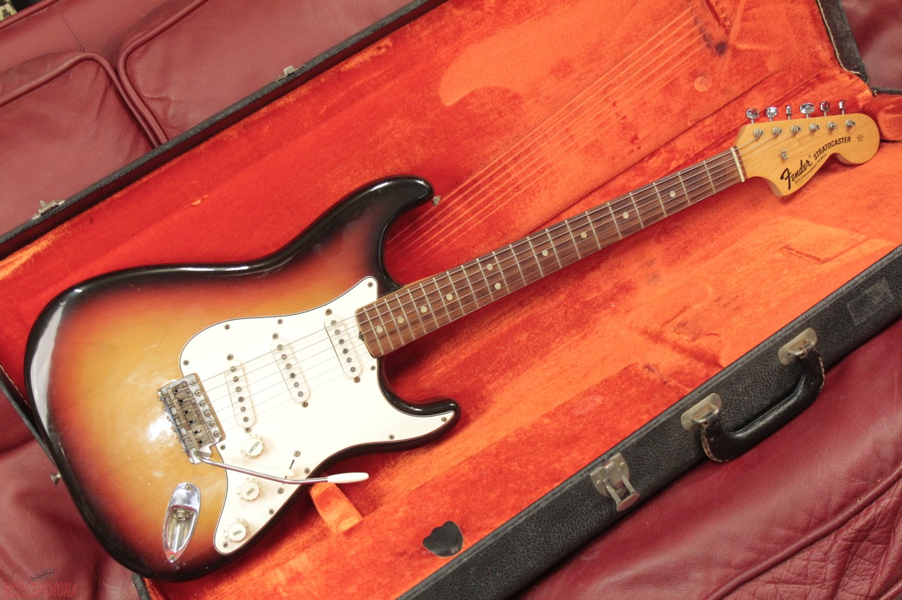

Electric Guitar
An electric guitar is a guitar that requires external electric sound amplification in order to be heard at typical performance volumes, unlike a standard acoustic guitar. It uses one or more pickups to convert the vibration of its strings into electrical signals, which ultimately are reproduced as sound by loudspeakers. The sound is sometimes shaped or electronically altered to achieve different timbres or tonal qualities via amplifier settings or knobs on the guitar. Often, this is done through the use of effects such as reverb, distortion and "overdrive"; the latter is considered to be a key element of electric blues guitar music and jazz, rock and heavy metal guitar playing. Designs also exist combining attributes of electric and acoustic guitars: the semi-acoustic and acoustic-electric guitars.